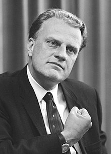

Download the latest christian music, movies, books, sermons and lot's more.
Unto the Hills- Devotional by Billy Graham

Till Divorce do us part...
Thousands of times a day a man and a woman stand before an American clergyman or magistrate to be united in marriage. In virtually every ceremony, they vow to remain married “until death us do part.” Tragically, one out of two of these vows will never be fulfilled because divorce now parts one out of every two married couples. A recent Census Bureau report found that for women in their thirties, 60 percent of them can expect to be divorced. Sixty percent! There are three elements to a successful marriage, and each needs to be present if a marriage is to succeed. The first is love.
Unfortunately, love has been redefined by Hollywood and television to mean something that is only physical, only feelings. But the apostle Paul defined love beautifully in 1 Corinthians 13. Read it and you will know how God defined love. Men are to love their wives as Christ loved the church and gave Himself for it. What woman could not respond and submit to such a selfless expression of Christ-like love? Maturity is the second important ingredient in a successful.......